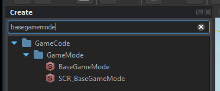
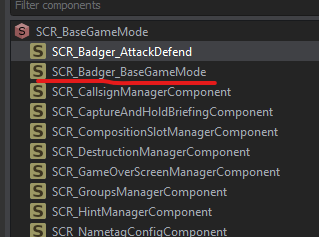

Base Gamemode
For my purposes I just want to create a gamemode class that can store SpawnAreas as well as Points of Interest along with appropriate APIs to register/unregister amongst a few other things.
[EntityEditorProps(category: "GameScripted/Gamemode", description: "Badger's basic game-mode.", color: "0 0 255 255")]
class SCR_Badger_BaseGameModeClass : SCR_BaseGameModeComponentClass
{
};
class SCR_Badger_BaseGameMode : SCR_BaseGameModeComponent
{
// Actual code will go here
};
This is all we need to make this class appear in the Enfusion Editor as a component we can add to SCR_BaseGameMode.
-
Place a
SCR_BaseGameModeinto the world.  -
Click on the
SCR_BaseGameModeentity andAddComponent -
Select
SCR_Badger_BaseGameMode, or whatever you called yours... if you're following along...
Now you should have it appear in the entity hierarchy 
Singleton
This will behave as a centralized place for any other subsystem. For my uses I'd like to store Faction SpawnAreas along with Points of Interest. Both of these are entities which will automatically register themselves which will require an API. So lets get cracking....
External entities will need a way to access our gamemode API. There should only ever be one instance. Thus, a singleton approach is perfect.
// Singleton, assigned on first 'get'
static SCR_Badger_BaseGameMode s_pInstance;
// Retrieves existing instance of gamemode, if it exists...
SCR_Badger_BaseGameMode GetInstance()
{
BaseGameMode gameMode = GetGame().GetGameMode();
if(!gameMode) return null;
if(!s_pInstance)
s_pInstance = SCR_Badger_BaseGameMode.Cast(gameMode.FindComponent(SCR_Badger_BaseGameMode));
return s_pInstance;
}
Spawn Areas
We need the ability to both register and unregister a spawn area.
private ref map<Faction, ref array<SCR_Badger_SpawnArea>> m_FactionSpawnAreas = new map<Faction, ref array<SCR_Badger_SpawnArea>>();
void RegisterSpawnArea(SCR_Badger_SpawnArea spawnArea)
{
if(!GetGame().GetFactionManager())
{
Print("Could not locate faction manager. Unable to register spawn area", LogLevel.ERROR);
return;
}
Faction areaFaction = GetGame().GetFactionManager().GetFactionByKey(spawnArea.GetAffiliatedFactionKey());
if(!areaFaction) return;
if(!m_FactionSpawnAreas.Contains(areaFaction))
m_FactionSpawnAreas.Insert(areaFaction, new array<SCR_Badger_SpawnArea>());
m_FactionSpawnAreas.Get(areaFaction).Insert(spawnArea);
Print(string.Format("%1 has %2 spawn areas now...", areaFaction.GetFactionName(), m_FactionSpawnAreas.Get(areaFaction).Count()), LogLevel.DEBUG);
}
void UnregisterSpawnArea(SCR_Badger_SpawnArea spawnArea)
{
if(!GetGame().GetFactionManager())
{
Print("Could not locate faction manager. Unable to unregister spawn area", LogLevel.ERROR);
return;
}
Faction areaFaction = GetGame().GetFactionManager().GetFactionByKey(spawnArea.GetAffiliatedFactionKey());
if(!areaFaction) return;
if(!m_FactionSpawnAreas.Contains(areaFaction)) return;
int indexOf = m_FactionSpawnAreas.Get(areaFaction).Find(spawnArea);
if(indexOf != -1)
m_FactionSpawnAreas.Get(areaFaction).Remove(indexOf);
}
Now that we have the ability to add/remove spawn areas we also need a way to access them!
// Gets the number of spawn areas that are being tracked for a given faction
int GetSpawnAreaCountFor(FactionKey factionKey)
{
if(!factionKey) return 0;
Faction faction = GetGame().GetFactionManager().GetFactionByKey(factionKey);
if(!faction) return 0;
if(!m_FactionSpawnAreas.Contains(faction)) return 0;
return m_FactionSpawnAreas.Get(faction).Count();
}
// Populate a given array with the spawn areas of a given faction (if applicable), and return the # of spawn areas
int GetSpawnAreasFor(notnull array<SCR_Badger_SpawnArea> outAreas, FactionKey factionKey)
{
if(!factionKey)
{
Print("[SCR_Badger_BaseGameMode] <GetSpawnAreasFor>: FactionKey cannot be null. Returning 0", LogLevel.ERROR);
return 0;
}
Faction faction = GetGame().GetFactionManager().GetFactionByKey(factionKey);
if(!faction)
{
Print(string.Format("[SCR_Badger_BaseGameMode] <GetSpawnAreasFor>: Could not locate faction with key %1", factionKey), LogLevel.ERROR);
return 0;
}
int count = 0;
foreach(SCR_Badger_SpawnArea spawnArea : m_FactionSpawnAreas.Get(faction))
{
outAreas.Insert(spawnArea);
count++;
}
return count;
}
// Return a random spawn area from a given faction
SCR_Badger_SpawnArea GetRandomSpawnAreaFor(FactionKey factionKey)
{
if(!factionKey)
{
Print("[SCR_Badger_BaseGameMode] <GetRandomSpawnAreaFor>: Faction key is null. Returning nothing");
return null;
}
Faction faction = GetGame().GetFactionManager().GetFactionByKey(factionKey);
if(!faction)
{
Print(string.Format("[SCR_Badger_BaseGameMode] <GetRandomSpawnAreaFor>: Could not locate faction with key %1", factionKey), LogLevel.ERROR);
return null;
}
if(!m_FactionSpawnAreas.Contains(faction)) return null; // if we're not tracking that faction...
return m_FactionSpawnAreas.Get(faction).GetRandomElement();
}
Point of interest
Just like our spawn areas we need the same type of API to register, unregister, retrieve and such....
private ref array<SCR_Badger_POI> m_PointsOfInterest = {};
// Retrieve # of POIs being tracked
int PointsOfInterestCount() { return m_PointsOfInterest.Count(); }
// Loads points of interest into `outArray` and returns # of POIs
int GetPointsOfInterest(notnull array<SCR_Badger_POI> outArray)
{
int count = 0;
foreach(SCR_Badger_POI area : m_PointsOfInterest)
{
outArray.Insert(area);
count++;
}
return count;
}
// Return a random POI.
SCR_Badger_POI GetRandomPointOfInterest()
{
if(m_PointsOfInterest.IsEmpty()) return null;
return m_PointsOfInterest.GetRandomElement();
}
// Retrieve the areas held by a given faction, in `areas`. Return # of POIs held.
int GetPointsOfInterestHeldBy(notnull array<SCR_Badger_POI> areas, FactionKey factionKey)
{
int count = 0;
foreach(SCR_Badger_POI area : m_PointsOfInterest)
{
if(area.GetOwningFaction().GetFactionKey() != factionKey)
continue;
areas.Insert(area);
count++;
}
return count;
}
// Registers a POI to the game mode
void RegsterPOI(SCR_Badger_POI area)
{
if(!area) return;
m_PointsOfInterest.Insert(area);
}
// Unregisters / removes POI from game mode
void UnregisterPOI(SCR_Badger_POI area)
{
if(!area) return;
int indexOf = m_PointsOfInterest.Find(area);
if(indexOf != -1)
m_PointsOfInterest.Remove(indexOf);
}
In closing
That's pretty much all the functionality we need in our basic gamemode system.